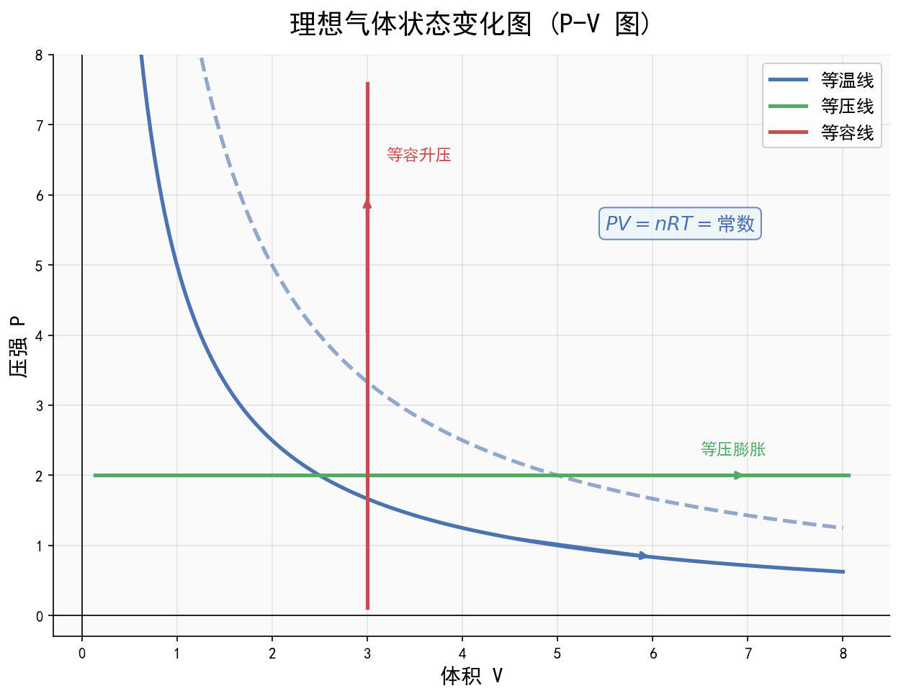

核心内容
关键概念
- 分子动理论：物质由大量分子组成；分子永不停息做无规则运动；分子间存在引力和斥力
- 阿伏伽德罗常数：N_A = 6.02×10²³ mol⁻¹，联系宏观与微观的桥梁
- 理想气体：忽略分子间作用力、忽略分子体积的模型；实际气体在高温低压下近似为理想气体
- 热力学第一定律：ΔU = Q + W（能量守恒在热学中的表达）
- 热力学第二定律：热量不能自发从低温传到高温；第二类永动机不可能制成
- 折射率：n = c/v = sin i / sin r（光从真空/空气射入介质）
- 全反射：光从光密介质射向光疏介质，入射角≥临界角时发生；sin C = 1/n
- 光电效应：光照金属表面，电子逸出；爱因斯坦光电方程 E_k = hν - W₀
- 玻尔模型：电子在分立轨道运动，能级跃迁时辐射/吸收光子 hν = E_m - E_n
- 核反应：衰变（α、β）、人工转变、裂变、聚变；质量亏损 Δm → 能量 E = Δmc²
核心公式/定理
分子动理论（微观量估算）
分子直径/数量级：d ≈ 10⁻¹⁰ m
分子质量：m₀ = M/N_A = ρV_m/N_A
分子体积（固体/液体）：V₀ = V_m/N_A = M/(ρN_A)
分子数：N = n·N_A = (m/M)·N_A = (V/V_m)·N_A
油膜法测分子直径：d = V/S（V为油酸体积，S为油膜面积）注意事项：气体分子间距离很大，V₀不是分子自身体积，而是每个分子平均占有的空间体积
理想气体状态方程
克拉伯龙方程：pV = nRT = (m/M)RT
或：pV/T = C（常量）
三定律（特殊情况）：
① 玻意耳定律（等温）：p₁V₁ = p₂V₂
② 查理定律（等容）：p₁/T₁ = p₂/T₂
③ 盖-吕萨克定律（等压）：V₁/T₁ = V₂/T₂适用条件：理想气体，质量不变注意事项：温度必须用热力学温度（K），T = t + 273.15；p-V图、V-T图、 p-T图斜率/面积含义不同

图：理想气体状态变化p-V图、V-T图、p-T图示意图
热力学定律
第一定律：ΔU = Q + W
ΔU > 0：内能增加（温度升高）
Q > 0：吸热
W > 0：外界对气体做功（体积缩小）
第二定律（两种表述）：
克劳修斯表述：热量不能自发从低温传到高温
开尔文表述：不可能从单一热源吸热全部用来做功而不产生其他影响注意：热力学第一定律是能量守恒，热力学第二定律是过程方向性；第一类永动机违反第一定律，第二类永动机违反第二定律但不违反第一定律
固体、液体、气体性质
晶体：有固定熔点，各向异性（单晶体）/各向同性（多晶体）
非晶体：无固定熔点，各向同性
表面张力：使液体表面收缩，方向与液面相切
液晶：兼具流动性和各向异性
饱和汽压：与温度有关，与体积无关
相对湿度 = 实际汽压 / 同温度饱和汽压 × 100%光的反射与折射
折射定律：n₁ sin i = n₂ sin r
折射率：n = c/v = λ₀/λ（光在介质中波长变短）
全反射临界角：sin C = 1/n（光从光密到光疏）
全反射条件：① 光密→光疏；② 入射角 i ≥ C
视深公式：h' = h/n（从光疏看光密中的物体，实际深度h，视深度h'）注意：折射率n > 1，光在介质中速度v < c，波长λ < λ₀（真空中波长）
光的干涉与衍射
双缝干涉：
条纹间距 Δx = λL/d（L为缝到屏距离，d为双缝间距）
亮纹条件：光程差 = nλ（n=0,±1,±2...）
暗纹条件：光程差 = (2n+1)λ/2
薄膜干涉（等厚干涉）：光程差 = 2nd + λ/2（半波损失）
衍射：障碍物/孔尺寸与波长可比拟时发生明显衍射注意：双缝干涉条纹等间距、等亮度；单缝衍射中央亮纹最宽最亮
光电效应
爱因斯坦光电方程：E_k = hν - W₀ = hν - hν₀
E_k：光电子最大初动能
hν：光子能量
W₀：逸出功（金属的截止频率 ν₀ = W₀/h）
遏止电压：eU_c = E_k = hν - W₀
光电效应发生条件：ν > ν₀（入射光频率大于截止频率）注意：光电效应是否发生只与频率有关，与光强无关；光强影响光电流大小（饱和光电流）
原子物理（玻尔模型与核反应）
玻尔模型能级公式（氢原子）：E_n = E₁/n² = -13.6 eV / n²
r_n = n²r₁（n=1,2,3...）
跃迁：hν = E_m - E_n（m > n时辐射光子，m < n时吸收光子）
天然放射：
α衰变：X → Y + ⁴He（质量数-4，电荷数-2）
β衰变：X → Y + ⁰e（质量数不变，电荷数+1，核内中子→质子+电子）
γ射线：伴随α/β衰变产生，高频电磁波
核反应方程：质量数守恒、电荷数守恒
质能方程：E = mc²，ΔE = Δmc²（1u = 931.5 MeV/c²）注意：半衰期是统计规律，只与核内部结构有关，与外界条件无关；大量原子核才有统计意义
方法步骤
热力学第一定律分析步骤
- 判断过程：是等温、等容、等压还是绝热过程？
- 分析做功W：气体膨胀→对外做功→W < 0；气体压缩→外界对气体做功→W > 0
- 分析传热Q：吸热→Q > 0；放热→Q < 0
- 判断内能变化ΔU：理想气体内能只与温度有关，温度升高→ΔU > 0
- 列方程：ΔU = Q + W，知二求一
理想气体状态变化图像分析
- p-V图：等温线为双曲线（pV = C）；面积表示功（W = ∫p dV）
- V-T图：等压线为过原点直线；斜率与压强成反比
- p-T图：等容线为过原点直线；斜率与体积成反比
- 关键点：判断过程中W、Q、ΔU的符号
光电效应图像分析
E_k-ν 图像：
- 横截距：截止频率 ν₀
- 纵截距：-W₀（逸出功的负值）
- 斜率：h（普朗克常量）
U_c-ν 图像：
- 横截距：截止频率 ν₀
- 斜率：h/e记忆口诀/技巧
"热一能量守恒，热二方向把关，永动机一违一不违""分子三把斧：物质组成、永动、作用力"
"光电方程记心间，E_k等于hν减W₀，频率不够不发生，光强只影响电流"
"玻尔能级负值，n大能量大，跃迁高到低，辐射光子能"
"核反应守恒：质量数守恒，电荷数守恒，质量亏损能量出"
光学口诀："光密到光疏，入射大临界，全反射来见；双缝间距反比d，正比波长和距离"
关联卡片
- 高二深化_物理_核心知识网络_电场公式体系 — 光电效应中光电子在电场中运动
- 高二深化_物理_核心知识网络_电磁感应定律 — 电磁波谱与光学联系
- 高一筑基_物理_核心知识网络_功和能与功能关系 — 热力学第一定律是能量守恒的特例

图：串联与并联电路对比（电流、电压、电阻关系）
备注
- 广东情境化命题常见素材：
- 热学：广东空调制冷（热泵原理）、粤港澳大桥材料热胀冷缩、广东梅雨天气湿度
- 光学：华为光纤通信（全反射）、深圳LED照明、5G光通信
- 原子物理：广东核电站（大亚湾/岭澳）、医学放疗（γ刀）、碳14测年
- 易错点：
- 热力学温度 T(K) = t(℃) + 273.15，不是+273
- 理想气体内能只与温度有关，与体积、压强无关
- 热量是过程量，不能说"物体含有热量"；内能是状态量
- 全反射只发生在光密→光疏，且入射角≥临界角；临界角 sin C = 1/n
- 光电效应中，光电子最大初动能只与频率有关，与光强无关；饱和光电流与光强有关
- β衰变中电子来自核内中子转化，不是核外电子；γ射线是光子流
- 半衰期是统计规律，对少量原子核无意义；半衰期不受温度、压强等外界条件影响
- 质能方程 ΔE = Δmc² 中，质量亏损是质量转化为能量，但质量守恒和能量守恒在核反应中仍然分别成立（只是质量数和能量数守恒）
- 重要常数：
- 普朗克常量 h = 6.63×10⁻³⁴ J·s = 4.14×10⁻¹⁵ eV·s
- 阿伏伽德罗常数 N_A = 6.02×10²³ mol⁻¹
- 真空中光速 c = 3×10⁸ m/s
- 1u = 1.66×10⁻²⁷ kg = 931.5 MeV/c²
- 等级赋分提示：本模块是"送分模块"，公式少、题型固定，选择题务必全对。热学图像题（p-V、V-T、p-T图）和内能变化分析是高频考点，需熟练掌握。